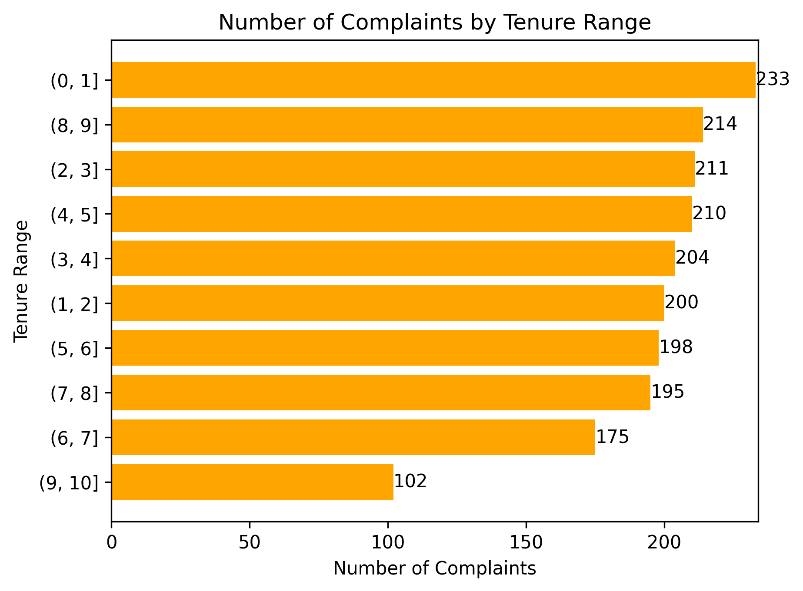
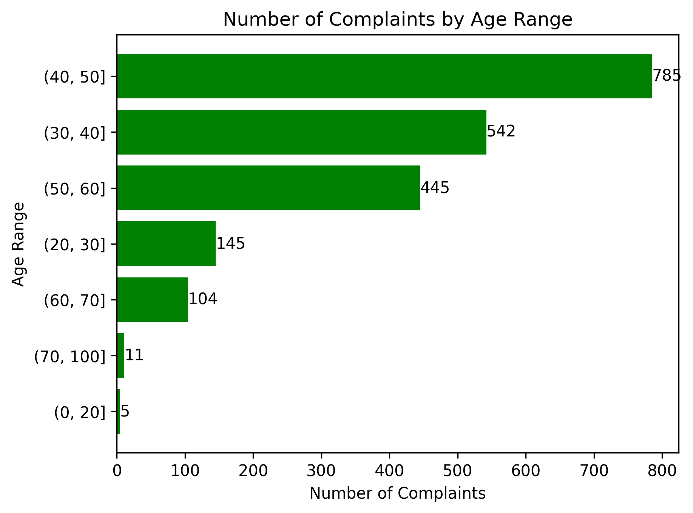
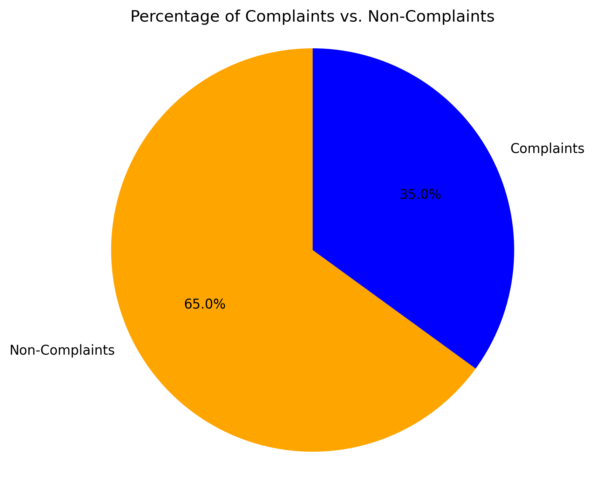
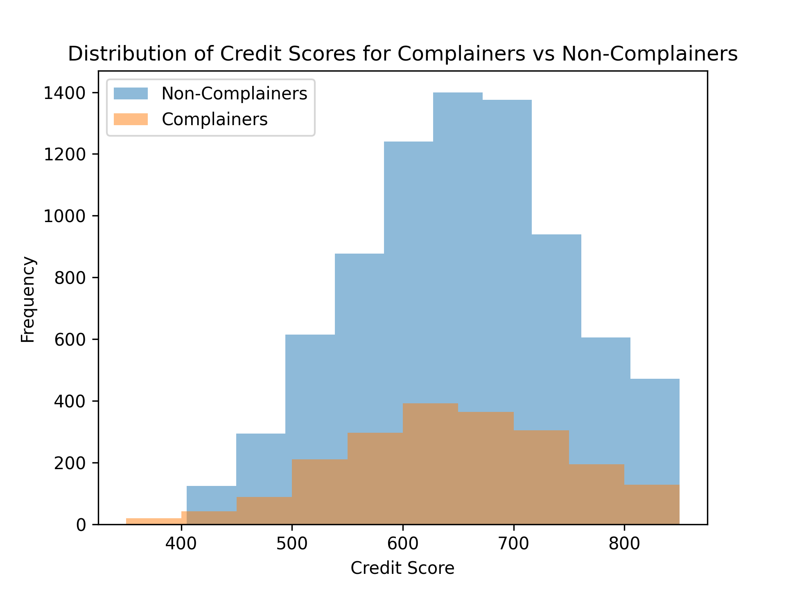
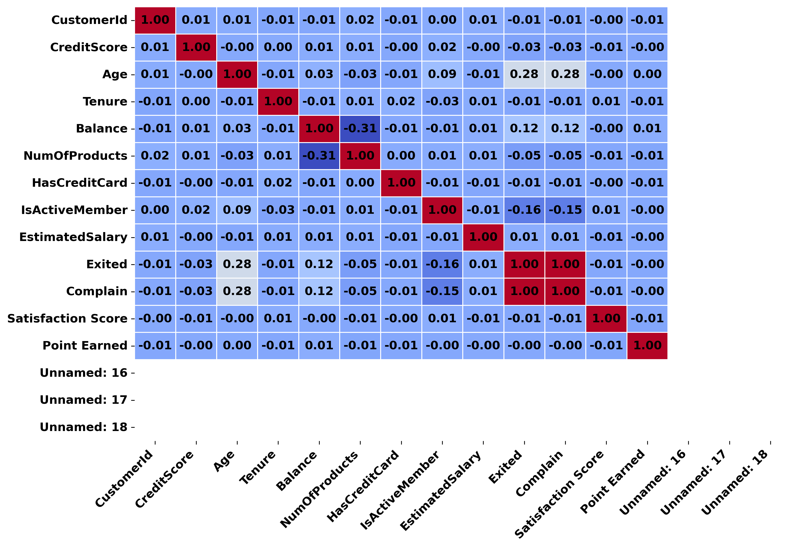

A deep dive into the behavioral and demographic patterns of banking clients to identify churn risks using classification and exploratory data analysis.
This project investigates churn behavior among bank customers by leveraging structured customer data to identify the factors that most strongly influence attrition. The goal was to support customer retention strategies by understanding exit trends and predicting customer churn.
• Exploratory analysis across demographics, satisfaction levels, and complaint behavior
• Handling of missing data, encoding of categorical variables, and outlier visualization
• Feature correlation matrix and importance ranking
• Binary classification modeling for churn prediction
• Visual storytelling with targeted graphs for stakeholder interpretation
Python, Pandas, Matplotlib, Seaborn, NumPy, Scikit-learn, Jupyter Notebook
• Understanding non-obvious churn triggers across multiple variables
• Dealing with imbalanced churn data
• Linking satisfaction and complaint data to actual churn outcomes
• Maintaining clean and interpretable visualizations across complex variables
This analysis sharpened my ability to extract actionable insights from exploratory data, especially when dealing with human behavior and attrition. It also reinforced the value of storytelling in data presentation and how visualization can inform decision-making in business contexts.

Figure 1. Most complaints originate from newer customers with 0–1 years of tenure.

Figure 2. The majority of complaints come from customers aged 30–50.

Figure 3. Only 35% of customers logged complaints, indicating potential silent dissatisfaction.

Figure 4. Distribution of credit scores among customers analyzed for churn risk.

Figure 5. Correlation heatmap showing relationships between input variables.